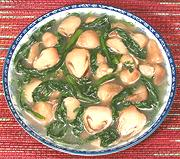

|
Tong Ho & Mushroom SoupChina | ||||
| Serves: Effort: Sched: DoAhead: |
4 soup ** 45 min Yes |
Chrysanthemum leaves are an ingeredient not familiar to most in North America, but worthwhile getting acquainted with. It will also work with other greens, and see also Comments. | |||
|
10 8 2 1 4 1/2 1/8 1/4 |
oz oz cl T c t t t |
Straw Mushrooms (1) Tong Ho (2) Garlic Oil (3) Stock, light Salt Pepper Sugar |
PREP - (10 min)
|